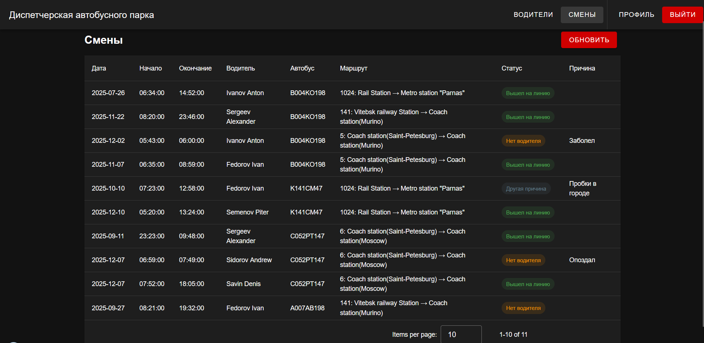
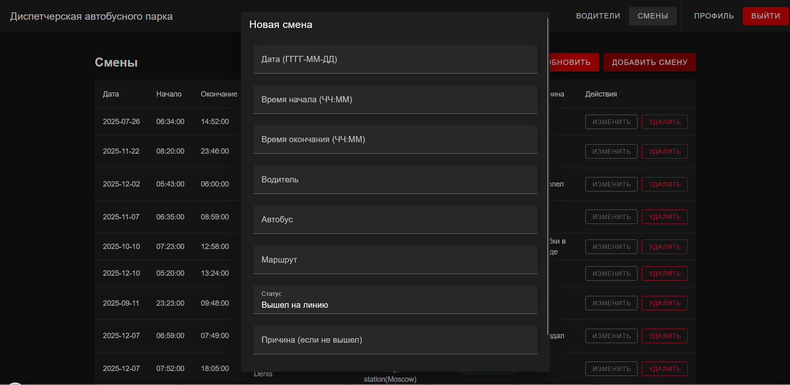
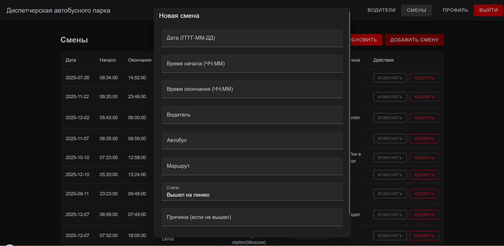

Реализация клиентской части средствами Vue.js.
Задание:
Разработать современное клиентское приложение для диспетчера автобусного парка на основе Vue.js, обеспечив:
- удобный интерфейс управления водителями и сменами;
- авторизацию и регистрацию пользователей;
- корректное взаимодействие с REST-API серверной части;
В качестве UI-фреймворка использован Vuetify 3, позволяющий построить адаптивный, современный и стильный интерфейс.
Ход выполнения
Создание проекта и структура frontend
Для разработки клиентской части был создан проект:
npm create vue@latest frontend
cd frontend
npm install
npm install vuetify axios vue-router
Настройка взаимодействия с API
В проекте создан собственный HTTP-клиент:
const http = axios.create({
baseURL: "http://localhost:8000",
})
При каждом запросе автоматически подставляется токен:
http.interceptors.request.use((config) => {
const token = localStorage.getItem("auth_token")
if (token) {
config.headers.Authorization = `Token ${token}`
}
return config
})
Реализация авторизации, регистрации и профиля
Пользователь вводит логин и пароль и фронт отправляет запрос:
POST /auth/token/login/
Полученный токен сохраняется в реактивном хранилище:
login(res.data.auth_token)
И записывается в localStorage, что позволяет хранить сессию между перезагрузками страницы.
Регистрация происхит через Djoser:
POST /auth/users/
Также пользователь ожет изменять свои учётные данные, а именно:
- email (PATCH /auth/users/me/)
- пароль (POST /auth/users/set_password/)
Интерфейс выполнен на Vuetify и представляет собой две формы:
- обновление профиля
- смена пароля

Интерфейс "Водители"
Страница /drivers отображает таблицу водителей:
- ФИО
- Класс
- Стаж
- Оклад
- Рассчитанная зарплата

Интерфейс "Смены"
Страница /shifts позволяет:
- просматривать все смены (водитель может встречаться много раз)
- видеть статус: "Вышел", "Поломка", "Нет водителя"
- выбирать автобус, маршрут и время

Пользователи
Было произведено разделение на обычных пользователей и администраторов. Обычные пользователи могут только просматривать список водителей и смен. Администратор же может, помимо просмотра, редактировать эти страницы, а именно:
- добовлять новых водителей
- изменять данные уже существующих водителей
- добовлять новые смены
- изменять уже существующие смены
Все изменения происходят по средсву диалогого окна v-dialog.
 

Вывод
В ходе разработки была создана современная, функциональная frontend-часть системы диспетчеризации автобусного парка. На основе Vue.js + Vuetify реализован удобный, адаптивный и визуально цельный интерфейс, полностью интегрированный с backend-частью на Django REST Framework.
Созданный клиент обладает:
- интуитивной навигацией
- поддержкой токенов авторизации
- гибкой ролевой системой
- удобными таблицами и формами
- мгновенным взаимодействием с API